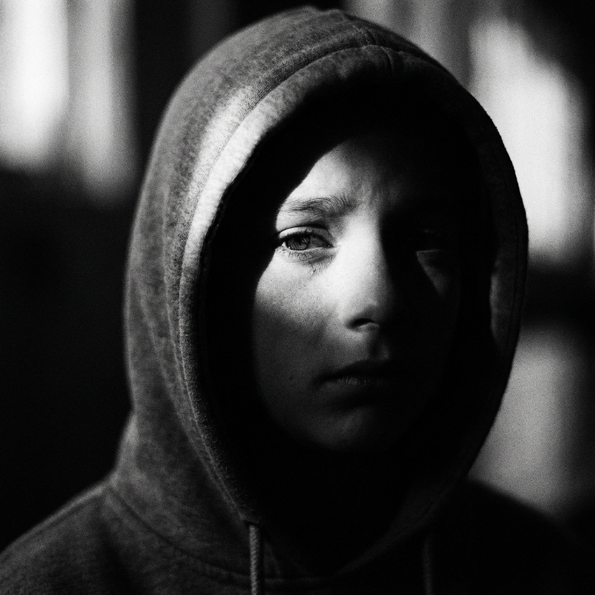
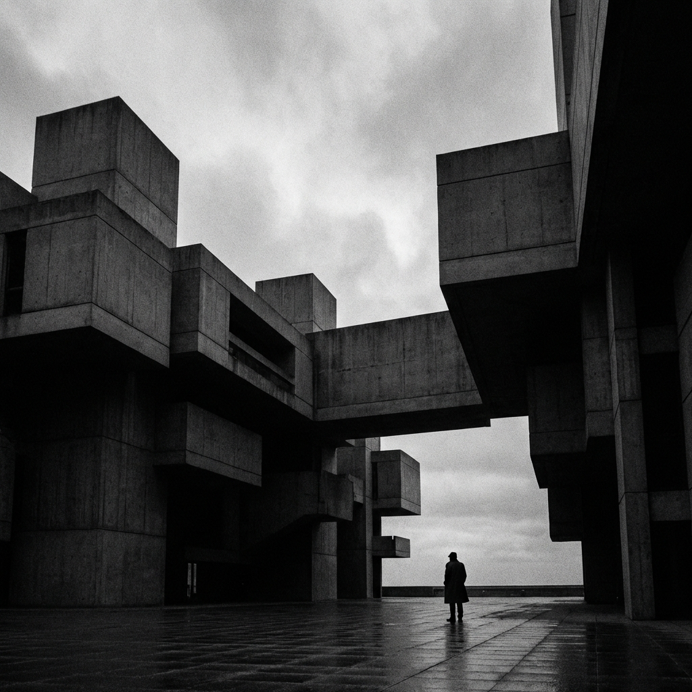
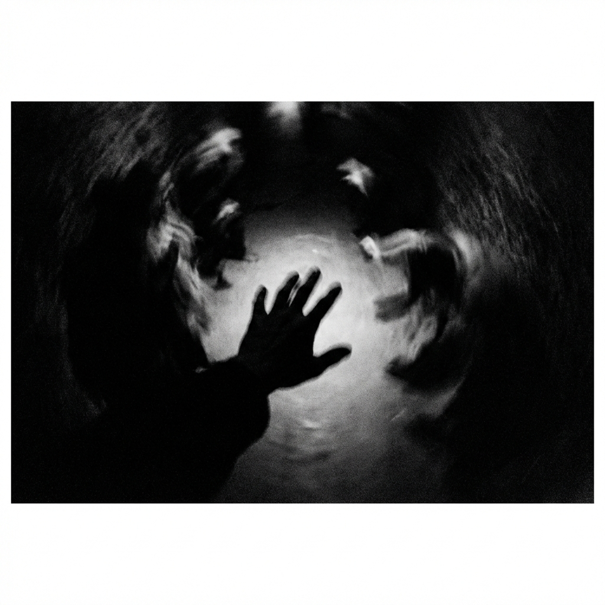

Capturing Silence
Exploring the uncertainty of human emotion.
The Artist
I am Aswin A V, a GenZ photographer obsessed with the unspoken.
My work explores the fragile boundary between what is seen and what is felt. In a world of noise, I seek the quiet uncertainty of the shadows.
Selected Works


